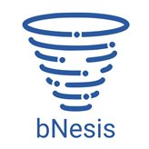

|  |
bNesis SDK using UkrPoshta API sample
This sample demonstrate downloading some documents and
adding/getting Address, Customer, Shipment. |
| bNesisDeveloperId | |
| UkrPoshtaBearer | |
| UkrPoshtaCounterpartyToken |